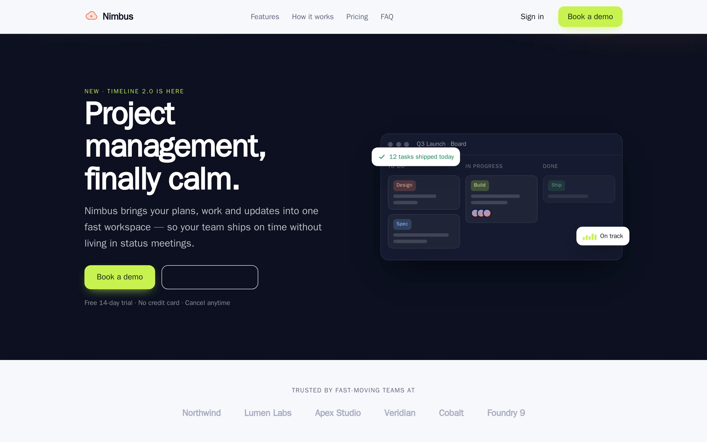

Installation
Requirements
| Requirement | Version |
|---|---|
| PHP | ^8.2 |
Laravel (illuminate/*) |
^11.0 | ^12.0 | ^13.0 |
| Filament | ^4.0 | ^5.0 (only needed for the bundled admin UI) |
spatie/laravel-package-tools |
^1.16 |
symfony/expression-language |
^6.0 | ^7.0 (powers expression Functions) |
Filament is a dev/suggested dependency, not a hard one — the render route, data API, flow engine and auth guard all work headless. You only need Filament to use the visual admin (which is how most apps are built).

synapse:install-demo.The AI layer is optional and additive. It is unlocked by installing the AI OpenRouter Gateway (andrecorugda/ai-openrouter-gateway); without it, everything else works and you build by hand.
1. Require the package
composer require andrecorugda/synapseThe service provider Andre\AiPageBuilder\AiPageBuilderServiceProvider and the PageBuilder facade alias are auto-discovered (see composer.json → extra.laravel).
2. Publish and run migrations
This package uses Spatie's package tools with publish-based migrations (hasMigrations(...)), so you publish the migration files into your app and then migrate:
php artisan vendor:publish --tag="ai-page-builder-migrations"
php artisan migrateThe migrations create these tables (logical names — the physical names are configurable in config/ai-page-builder.php → database.tables):
| Logical key | Default table | Holds |
|---|---|---|
pages |
pages |
Pages and email templates |
media |
page_builder_media |
Media library items |
flows |
page_builder_flows |
Flow definitions |
flow_runs |
page_builder_flow_runs |
Flow run telemetry |
functions |
page_builder_functions |
Reusable Functions |
models |
page_builder_models |
Collection (data-model) metadata |
fields |
page_builder_fields |
Collection field metadata |
variables |
page_builder_variables |
States (global variables) |
settings |
page_builder_settings |
Builder settings (home page, SMTP) |
users |
page_builder_users |
The built app's end-users |
roles |
page_builder_roles |
The built app's roles |
permissions |
page_builder_permissions |
The built app's permissions |
The Collections you define later create their own physical tables named
pb_<key>(see Collections & data). Those are not migrated — they are synced on demand.
3. Register the Filament plugin
In your panel provider:
use Andre\AiPageBuilder\Filament\AiPageBuilderPlugin;
use Filament\Panel;
public function panel(Panel $panel): Panel
{
return $panel
->plugin(AiPageBuilderPlugin::make());
}AiPageBuilderPlugin::make() registers a Content navigation group (configurable) with these resources and pages:
- Resources — Pages, Media, Flows, Functions, States (Variables), Collections (PbModels), App Users, Roles.
- Pages — Build with AI, Settings.
(getId() is ai-page-builder. See src/Filament/AiPageBuilderPlugin.php.)
4. Optional — unlock AI generation
composer require andrecorugda/ai-openrouter-gatewayThen set a key in .env:
# Used by the gateway integration:
OPENROUTER_INTEGRATION_KEY=sk-or-...
# (the package also reads OPENROUTER_API_KEY as a fallback for the direct driver)On boot the package auto-seeds two gateway integrations when the gateway is detected (autoSeedGatewayIntegration() in the service provider):
page_builder— the general integration.app_builder— the bundled, self-healing app-generation integration whose system prompt is generated from the package's own block/field/node catalogs. It is re-seeded if deleted and never clobbers a tuned prompt version.
Auto-seeding is fully guarded: a missing or un-migrated gateway never breaks boot. You can also seed manually:
php artisan ai-page-builder:seed-integrationDisable auto-seed with AI_PAGE_BUILDER_AI_AUTO_SEED=false. See AI for the full picture.
5. Schedule cron flows (optional)
If you use cron-triggered flows, schedule the runner at your chosen interval (e.g. in routes/console.php or the app's scheduler):
use Illuminate\Support\Facades\Schedule;
Schedule::command('ai-page-builder:run-cron-flows')->everyMinute();The command runs every active flow whose trigger_type is cron. See Flows → Cron.
6. Self-hosting front-end assets (offline / strict-CSP)
By default the editor loads GrapesJS, Drawflow, Alpine and Ace from public CDNs (zero-config). For air-gapped or strict-CSP installs, vendored copies ship in the box:
php artisan vendor:publish --tag="ai-page-builder-assets"
# → public/vendor/ai-page-builder/{grapesjs,drawflow,alpine,ace}/Then point the asset env vars at the published copies:
AI_PAGE_BUILDER_GRAPESJS_JS="/vendor/ai-page-builder/grapesjs/grapes.min.js"
AI_PAGE_BUILDER_GRAPESJS_CSS="/vendor/ai-page-builder/grapesjs/grapes.min.css"
AI_PAGE_BUILDER_DRAWFLOW_JS="/vendor/ai-page-builder/drawflow/drawflow.min.js"
AI_PAGE_BUILDER_DRAWFLOW_CSS="/vendor/ai-page-builder/drawflow/drawflow.min.css"
AI_PAGE_BUILDER_ALPINE_JS="/vendor/ai-page-builder/alpine/cdn.min.js"
AI_PAGE_BUILDER_ACE_BASE="/vendor/ai-page-builder/ace"
AI_PAGE_BUILDER_ACE_BASEmust stay a directory — Ace appends/ace.jsand lazy-loads its mode/theme/worker files relative to it.
Re-run the publish with --force after upgrading the package to refresh the vendored copies.
7. Verify
- Visit your Filament panel → the Content group should list the resources above.
- A published page renders at
/{render_prefix}/{slug}(default/p/{slug}). See Pages & components. - Quality scripts:
composer test(Pest),composer lint(Pint),composer analyse(PHPStan/larastan).
Common env vars at a glance
| Env var | Default | Purpose |
|---|---|---|
AI_PAGE_BUILDER_DB_CONNECTION |
host default | Connection for the package's own tables |
AI_PAGE_BUILDER_RENDER_PREFIX |
p |
Published-page route prefix |
AI_PAGE_BUILDER_DATA_API_PREFIX |
api/pb |
Auto REST API prefix |
AI_PAGE_BUILDER_AUTH |
true |
Enable the built app's auth guard |
AI_PAGE_BUILDER_AI_DRIVER |
auto |
auto | gateway | openrouter |
AI_PAGE_BUILDER_MEDIA_DISK |
public |
Filesystem disk for uploads |
The full list is in Configuration.